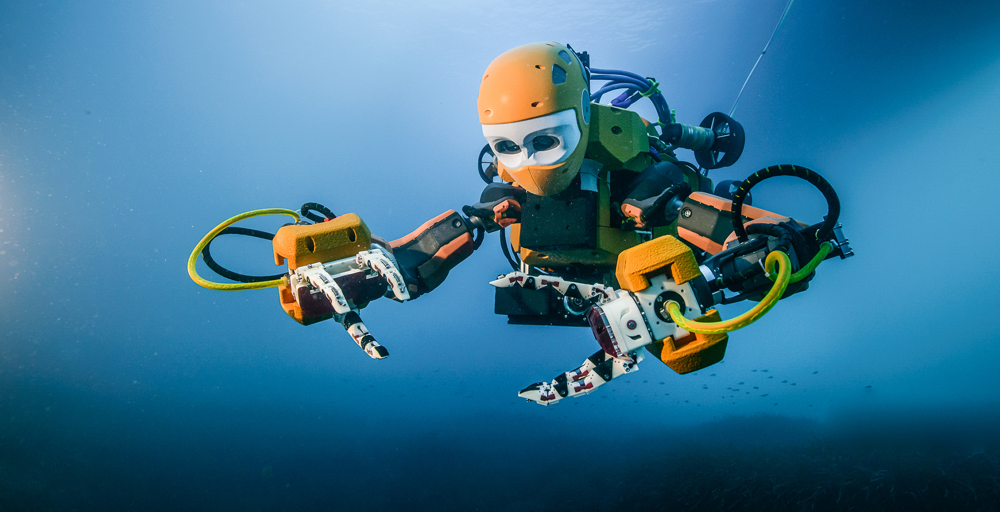

Exploratory Robots
Exploratory Robots are used in places that it would be dangerous for humans to go.
We also use them to look at the surface of other planets to see if they are inhabitable
We have made many underwater robots to be
able to survive the pressure of going deep underwater